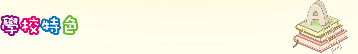
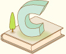

英语：
雙外籍老師強化英文語境，加設英文電視台提升學生對英語興趣及溝通能力
與本地國際學校聯繫，安排國際生到校支援，提供高密度語言場境，提升聽說自信
透過啟發潛能境外及本地交流 / 參觀 / 活動，豐富眼界體驗，活學活用
利用英文科電子學習教材、平台及電子家課，照顧學生個別差異，強化英語自學能力
透過專業支援及團隊培訓，因應生源需要及程度，設計趣味性及高階思維校本課業，讓學生不同能力得以鞏固及發展
资讯科技：
「翻轉教室」建構知識，透過網上預習、課堂小組解難活動，進行師生互動，以不同認知層次的提問及思維策略以提高學生的思維能力
延伸課後學習，掌握自學技能，包括工具書及資訊科技於家中進行網上自學及重溫反思
培養自學閱讀，透過網上閱讀（e-learning），令學生突破時限，在家中養成自學閱讀習慣
关爱：
家庭探訪關顧隊，由學校老師、社工，聯同本會堂校合作教會，組成探訪小隊，定期到內地及本區探訪，了解家庭需要，作出適切支援，提供家庭教育及輔導服務
本會社會服務部，提供輔導服務、學生成長小組、遊戲治療，透過本會委派社工、教育心理學家、臨床心理學家等具規模隊工，支援學生成長及家庭支援需要
人才：
發展體藝專才，學校除會提供不同類型的體育、藝術、音樂活動讓學生選擇外，更會集中於體育項目進行練訓。
